# Load core libraries used throughout this chapter
library(tidyverse)
library(moments) # skewness, kurtosis
library(data.table)
library(gtsummary) # Table 1 summaries
library(gt) # export gtsummary tables
library(skimr) # quick missingness / distribution overview
library(DescTools) # BinomCI etc.
library(gridExtra)
library(patchwork)
library(readxl)
# NOTE ON FILE PATHS
# Every path below uses here::here() so the chapter runs on any machine
# once the project's .Rproj / root is set correctly. Replace the folder
# names to match your own project structure if you are following along.
library(here)
data <- haven::read_dta(here("Environment/Datasets", "dt.dta"))
data_new <- read_excel(here("Environment/Datasets", "wcgs.xls"))Descriptive Statistics with R (Practical Part)
Learning Objectives
By the end of this chapter, you should be able to:
- Summarize categorical variables using frequencies and proportions.
- Summarize numeric variables using measures of central tendency, dispersion, and shape (skewness/kurtosis).
- Assess whether a numeric variable is approximately normally distributed.
- Produce cross-tabulations and stratified numeric summaries.
- Build a publication-ready “Table 1” using
gtsummary. - Visualize categorical and numeric data using base R and
ggplot2. - Produce a simple choropleth map using
sfandggplot2.
You can get a descriptive overview of the whole dataset using the summary() function.
data <- haven::read_dta(here("Environment/Datasets", "dt.dta"))
# clean data
data$Sex <- factor(data$Sex, levels = c(0,1), labels = c("Female", "Male"))
# summarize
summary(data)#> mcaseid Cluster Household Line_number
#> Length:12353 Min. : 1.0 Min. : 1.0 Min. : 1.000
#> Class :character 1st Qu.:115.0 1st Qu.: 31.0 1st Qu.: 1.000
#> Mode :character Median :237.0 Median : 67.0 Median : 2.000
#> Mean :237.8 Mean : 85.3 Mean : 2.641
#> 3rd Qu.:359.0 3rd Qu.:125.0 3rd Qu.: 3.000
#> Max. :476.0 Max. :505.0 Max. :24.000
#>
#> Sampling_weight Age Sex Ethnicity
#> Min. :0.1606 Min. :15.00 Female:7440 Length:12353
#> 1st Qu.:0.5619 1st Qu.:21.00 Male :4913 Class :character
#> Median :0.8889 Median :29.00 Mode :character
#> Mean :0.9975 Mean :29.85
#> 3rd Qu.:1.3270 3rd Qu.:38.00
#> Max. :3.7038 Max. :49.00
#>
#> Religion marital_status Education occupation
#> Length:12353 Min. :1.000 Min. :0.000 Length:12353
#> Class :character 1st Qu.:1.000 1st Qu.:1.000 Class :character
#> Mode :character Median :2.000 Median :1.000 Mode :character
#> Mean :1.759 Mean :1.298
#> 3rd Qu.:2.000 3rd Qu.:2.000
#> Max. :3.000 Max. :3.000
#>
#> Location Ecologicalbelt Province District
#> Min. :1.000 Length:12353 Length:12353 Length:12353
#> 1st Qu.:1.000 Class :character Class :character Class :character
#> Median :2.000 Mode :character Mode :character Mode :character
#> Mean :1.545
#> 3rd Qu.:2.000
#> Max. :2.000
#>
#> Wealth Health_insurance current_alcohol current_smoke
#> Length:12353 Min. :0.0000 Length:12353 Length:12353
#> Class :character 1st Qu.:0.0000 Class :character Class :character
#> Mode :character Median :0.0000 Mode :character Mode :character
#> Mean :0.1172
#> 3rd Qu.:0.0000
#> Max. :1.0000
#>
#> Self_reported_health disability Food_insecurity PHQ9_Score
#> Length:12353 Min. :0.0000 Length:12353 Min. : 0.000
#> Class :character 1st Qu.:0.0000 Class :character 1st Qu.: 0.000
#> Mode :character Median :0.0000 Mode :character Median : 1.000
#> Mean :0.2272 Mean : 2.279
#> 3rd Qu.:0.0000 3rd Qu.: 3.000
#> Max. :2.0000 Max. :24.000
#> NA's :5
#> GAD_Score
#> Min. : 0.000
#> 1st Qu.: 0.000
#> Median : 2.000
#> Mean : 2.942
#> 3rd Qu.: 4.000
#> Max. :21.000
#> Notice that the summary output differs depending on the underlying data type (numeric vs. factor vs. character).
Part 1: Descriptive Statistics of Categorical Variables
The categorical variables can be described using frequency and percentage.
Frequency
We can use the table() function to generate a frequency table for categorical variables. The useNA argument controls whether missing values are shown: "no" (default), "ifany", or "always".
table(data$Sex)#>
#> Female Male
#> 7440 4913table(data$Sex, useNA = "no")#>
#> Female Male
#> 7440 4913table(data$Sex, useNA = "ifany") # shows NA column only if missings exist#>
#> Female Male
#> 7440 4913table(data$Sex, useNA = "always") # always shows NA column#>
#> Female Male <NA>
#> 7440 4913 0Proportion
To calculate proportions, use prop.table(), which is always applied on top of a table() object.
sex <- table(data$Sex)
prop.table(sex)#>
#> Female Male
#> 0.6022828 0.3977172# As percentage, rounded to 1 decimal
round(prop.table(sex) * 100, 1)#>
#> Female Male
#> 60.2 39.8# Using the pipe (tidyverse loaded already)
100 * table(data$Sex) |>
prop.table() |>
round(3)#>
#> Female Male
#> 60.2 39.8Bar Chart and Pie Chart (Base R)
Pie chart: pie(x, labels = names(x), col = NULL, main = NULL, ...)
pie(sex, main = "Sex-wise distribution of population")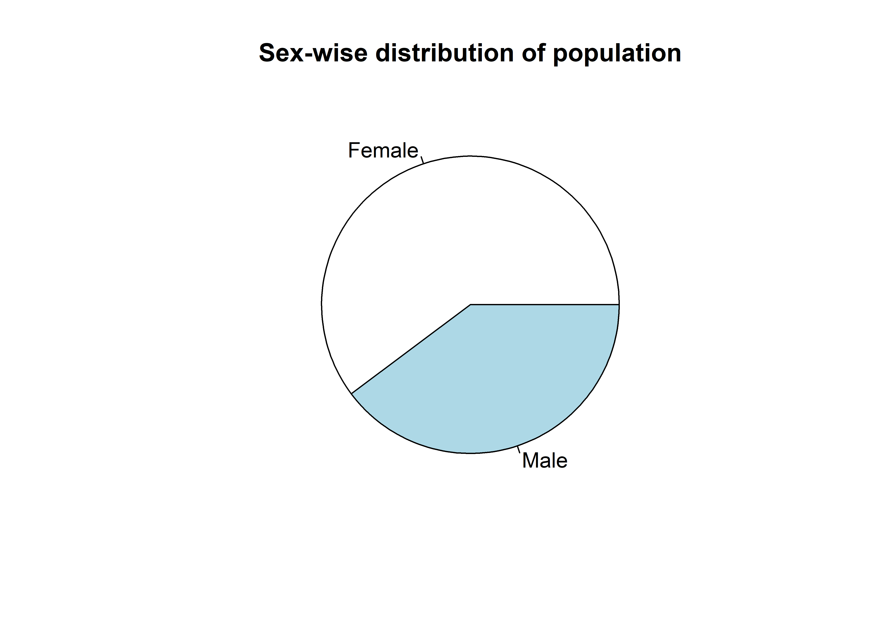
pie(sex,
main = "Sex-wise distribution of population",
labels = c("Female", "Male"),
col = c("pink", "lightblue"))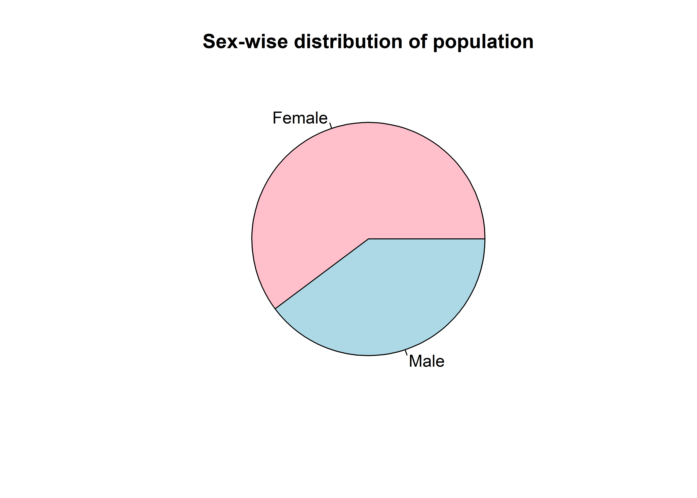
Bar chart: barplot(height, names.arg, beside = TRUE, col = NULL, main = NULL, xlab = NULL, ylab = NULL)
barplot(sex,
main = "Sex-wise distribution of population",
names.arg = row.names(sex),
ylab = "Frequency", xlab = "Gender",
col = c("pink", "lightblue"),
las = 1)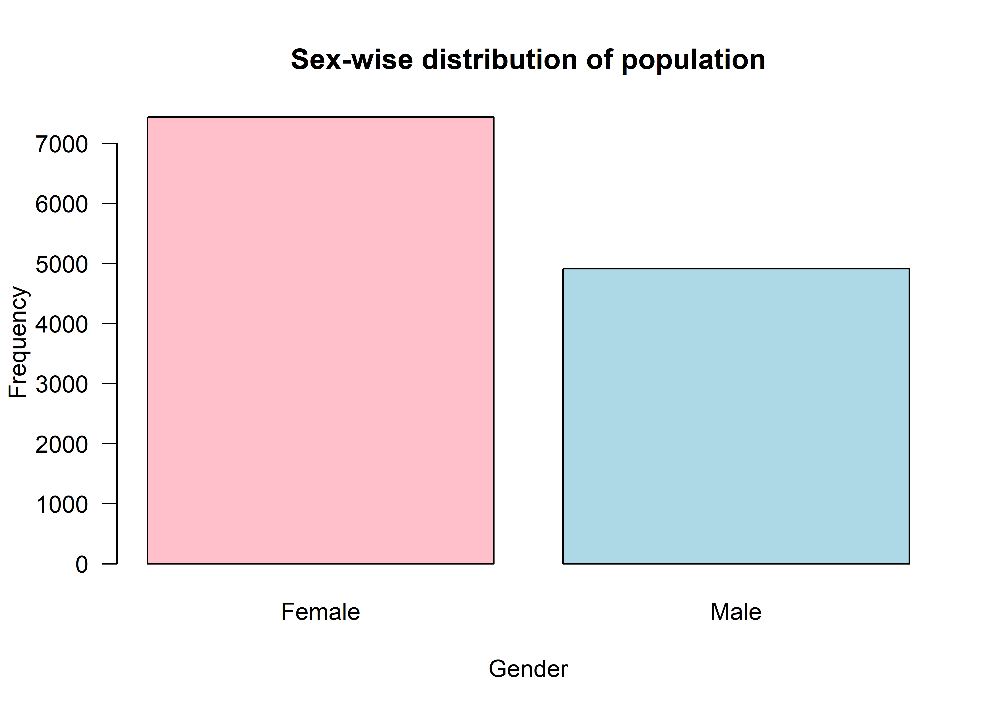
Base R plots (pie(), barplot(), hist(), boxplot()) are fast and great for exploratory checks while you’re cleaning data. For publication-quality figures, you’ll generally move to ggplot2 — see Part 5.
Cross-Tabulation (Two Categorical Variables)
table(data$Sex, data$Ethnicity) # first variable = rows, second = columns#>
#> Brahmin_chhetri Dalit Janajati Madheshi Others
#> Female 2405 1242 2584 931 278
#> Male 1438 721 1805 767 182# dplyr
data |>
select(Sex, Ethnicity) |>
table()#> Ethnicity
#> Sex Brahmin_chhetri Dalit Janajati Madheshi Others
#> Female 2405 1242 2584 931 278
#> Male 1438 721 1805 767 182# data.table
data.dt <- data.table(data)
data.dt[, table(Sex, Ethnicity)]#> Ethnicity
#> Sex Brahmin_chhetri Dalit Janajati Madheshi Others
#> Female 2405 1242 2584 931 278
#> Male 1438 721 1805 767 182Proportions for a Cross-Tabulation
- default: proportion of the whole table
margin = 1: row proportionmargin = 2: column proportion
ctable.sex.eth <- table(data$Sex, data$Ethnicity)
prop.table(ctable.sex.eth) # overall#>
#> Brahmin_chhetri Dalit Janajati Madheshi Others
#> Female 0.19468955 0.10054238 0.20917996 0.07536631 0.02250465
#> Male 0.11640897 0.05836639 0.14611835 0.06209018 0.01473326prop.table(ctable.sex.eth, margin = 1) # row %#>
#> Brahmin_chhetri Dalit Janajati Madheshi Others
#> Female 0.32325269 0.16693548 0.34731183 0.12513441 0.03736559
#> Male 0.29269286 0.14675351 0.36739263 0.15611643 0.03704458prop.table(ctable.sex.eth, margin = 2) # column %#>
#> Brahmin_chhetri Dalit Janajati Madheshi Others
#> Female 0.6258132 0.6327050 0.5887446 0.5482921 0.6043478
#> Male 0.3741868 0.3672950 0.4112554 0.4517079 0.3956522round(prop.table(ctable.sex.eth) * 100, 2)#>
#> Brahmin_chhetri Dalit Janajati Madheshi Others
#> Female 19.47 10.05 20.92 7.54 2.25
#> Male 11.64 5.84 14.61 6.21 1.47# data.table equivalent
data.dt[, round(prop.table(table(Sex, Ethnicity), 1) * 100, 1)]#> Ethnicity
#> Sex Brahmin_chhetri Dalit Janajati Madheshi Others
#> Female 32.3 16.7 34.7 12.5 3.7
#> Male 29.3 14.7 36.7 15.6 3.7data.dt[, round(prop.table(table(Sex, Ethnicity), 2) * 100, 1)]#> Ethnicity
#> Sex Brahmin_chhetri Dalit Janajati Madheshi Others
#> Female 62.6 63.3 58.9 54.8 60.4
#> Male 37.4 36.7 41.1 45.2 39.6prop.table() takes a cross-table produced by table() as its first argument. Only when piping with |> can you supply the margin argument unnamed, as shown above.
Cross-Tabulation Bar Chart
barplot(ctable.sex.eth,
main = "Sex and ethnicity-wise distribution of population",
ylab = "Frequency", xlab = "Ethnicity",
beside = TRUE,
col = c("skyblue", "orange"))
legend("topright", legend = c("Female", "Male"),
fill = c("skyblue", "orange"))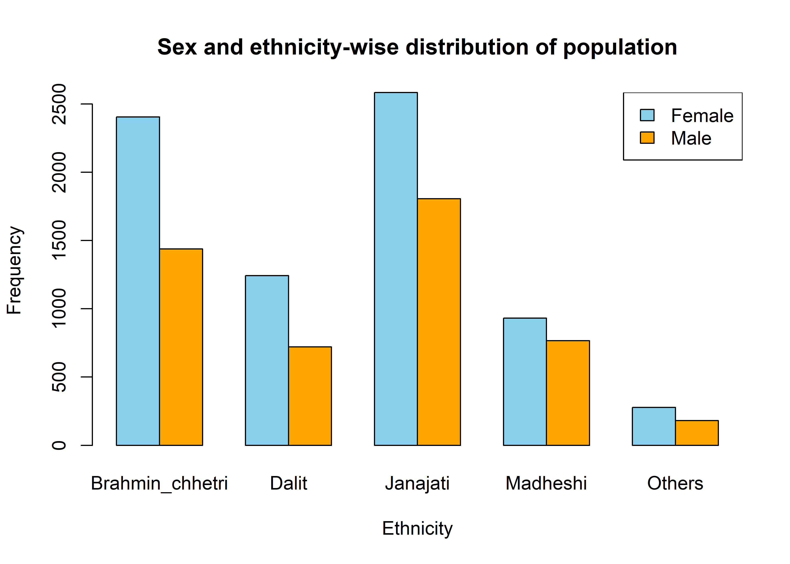
Part 2: Descriptive Statistics of Numeric Variables
| Function | Use |
|---|---|
mean(x, na.rm=TRUE) |
Arithmetic mean |
sd(x, na.rm=TRUE) |
Standard deviation |
var(x, na.rm=TRUE) |
Variance |
median(x, na.rm=T) |
Median |
quantile(x, probs, type) |
Quantiles |
min(x, na.rm=T) / max(x, na.rm=T) |
Minimum / maximum |
range(x, na.rm=T) |
Min and max |
moments::skewness(x) |
Skewness |
moments::kurtosis(x) |
Kurtosis |
Missingness Overview First
Before summarizing, it’s good habit to check how much data is missing — this connects back to the missing-data chapter and should always precede your descriptive statistics.
skimr::skim(data)| Name | data |
| Number of rows | 12353 |
| Number of columns | 25 |
| _______________________ | |
| Column type frequency: | |
| character | 12 |
| factor | 1 |
| numeric | 12 |
| ________________________ | |
| Group variables | None |
Variable type: character
| skim_variable | n_missing | complete_rate | min | max | empty | n_unique | whitespace |
|---|---|---|---|---|---|---|---|
| mcaseid | 0 | 1 | 8 | 10 | 0 | 12353 | 0 |
| Ethnicity | 0 | 1 | 5 | 15 | 0 | 5 | 0 |
| Religion | 0 | 1 | 5 | 9 | 0 | 2 | 0 |
| occupation | 0 | 1 | 5 | 26 | 0 | 6 | 0 |
| Ecologicalbelt | 0 | 1 | 4 | 8 | 0 | 3 | 0 |
| Province | 0 | 1 | 5 | 22 | 0 | 7 | 0 |
| District | 0 | 1 | 4 | 16 | 0 | 75 | 0 |
| Wealth | 0 | 1 | 6 | 7 | 0 | 5 | 0 |
| current_alcohol | 0 | 1 | 13 | 24 | 0 | 4 | 0 |
| current_smoke | 0 | 1 | 9 | 12 | 0 | 3 | 0 |
| Self_reported_health | 0 | 1 | 3 | 9 | 0 | 5 | 0 |
| Food_insecurity | 0 | 1 | 0 | 3 | 24 | 3 | 0 |
Variable type: factor
| skim_variable | n_missing | complete_rate | ordered | n_unique | top_counts |
|---|---|---|---|---|---|
| Sex | 0 | 1 | FALSE | 2 | Fem: 7440, Mal: 4913 |
Variable type: numeric
| skim_variable | n_missing | complete_rate | mean | sd | p0 | p25 | p50 | p75 | p100 | hist |
|---|---|---|---|---|---|---|---|---|---|---|
| Cluster | 0 | 1 | 237.78 | 138.81 | 1.00 | 115.00 | 237.00 | 359.00 | 476.0 | ▇▇▆▇▇ |
| Household | 0 | 1 | 85.30 | 70.15 | 1.00 | 31.00 | 67.00 | 125.00 | 505.0 | ▇▃▁▁▁ |
| Line_number | 0 | 1 | 2.64 | 1.79 | 1.00 | 1.00 | 2.00 | 3.00 | 24.0 | ▇▁▁▁▁ |
| Sampling_weight | 0 | 1 | 1.00 | 0.55 | 0.16 | 0.56 | 0.89 | 1.33 | 3.7 | ▇▆▂▁▁ |
| Age | 0 | 1 | 29.85 | 9.97 | 15.00 | 21.00 | 29.00 | 38.00 | 49.0 | ▇▆▆▆▅ |
| marital_status | 0 | 1 | 1.76 | 0.48 | 1.00 | 1.00 | 2.00 | 2.00 | 3.0 | ▃▁▇▁▁ |
| Education | 0 | 1 | 1.30 | 0.83 | 0.00 | 1.00 | 1.00 | 2.00 | 3.0 | ▃▇▁▇▁ |
| Location | 0 | 1 | 1.55 | 0.50 | 1.00 | 1.00 | 2.00 | 2.00 | 2.0 | ▇▁▁▁▇ |
| Health_insurance | 0 | 1 | 0.12 | 0.32 | 0.00 | 0.00 | 0.00 | 0.00 | 1.0 | ▇▁▁▁▁ |
| disability | 5 | 1 | 0.23 | 0.46 | 0.00 | 0.00 | 0.00 | 0.00 | 2.0 | ▇▁▂▁▁ |
| PHQ9_Score | 0 | 1 | 2.28 | 3.26 | 0.00 | 0.00 | 1.00 | 3.00 | 24.0 | ▇▁▁▁▁ |
| GAD_Score | 0 | 1 | 2.94 | 3.30 | 0.00 | 0.00 | 2.00 | 4.00 | 21.0 | ▇▂▁▁▁ |
Central Tendency and Dispersion
mean(data$Age, na.rm = TRUE)#> [1] 29.84554sd(data$Age, na.rm = TRUE)#> [1] 9.973959var(data$Age, na.rm = TRUE)#> [1] 99.47987median(data$Age, na.rm = TRUE)#> [1] 29quantile(data$Age, probs = c(0.25, 0.5, 0.75), na.rm = TRUE)#> 25% 50% 75%
#> 21 29 38min(data$Age, na.rm = TRUE)#> [1] 15max(data$Age, na.rm = TRUE)#> [1] 49range(data$Age, na.rm = TRUE)#> [1] 15 49# Mode (R has no built-in mode() for this purpose)
names(which.max(table(data$Age)))#> [1] "18"# Coefficient of variation — useful when comparing spread
# across variables measured on different scales
cv <- function(x) sd(x, na.rm = TRUE) / mean(x, na.rm = TRUE) * 100
cv(data$Age)#> [1] 33.41859mode() in base R does not compute the statistical mode — it returns the storage type of an object (numeric, integer, list, factor, etc.). Use the which.max(table(x)) approach shown above instead.
Shape of the Distribution: Skewness and Kurtosis
Mean and median alone can be misleading for skewed variables common in public health data (length of hospital stay, income, viral load). Skewness tells you about asymmetry; kurtosis tells you about “tailedness” relative to a normal distribution.
moments::skewness(data_new$age, na.rm = TRUE)#> [1] 0.5263655moments::kurtosis(data_new$age, na.rm = TRUE)#> [1] 2.227403Interpreting skewness:
- ~0: roughly symmetric
- > 0: right-skewed (long tail toward higher values) — mean > median
- < 0: left-skewed (long tail toward lower values) — mean < median
Interpreting kurtosis: values close to 3 resemble a normal distribution (some packages report “excess kurtosis” centered at 0 — always check which convention your function uses).
Is the Variable Normally Distributed?
Whether a numeric variable is approximately normal informs later choices (e.g., parametric vs. non-parametric tests). Two common approaches:
# Visual check: Q-Q plot
qqnorm(data_new$age, main = "Q-Q Plot of Age")
qqline(data_new$age, col = "red", lwd = 2)
# Formal test (Shapiro-Wilk; sensitive with large n)
shapiro.test(data_new$age)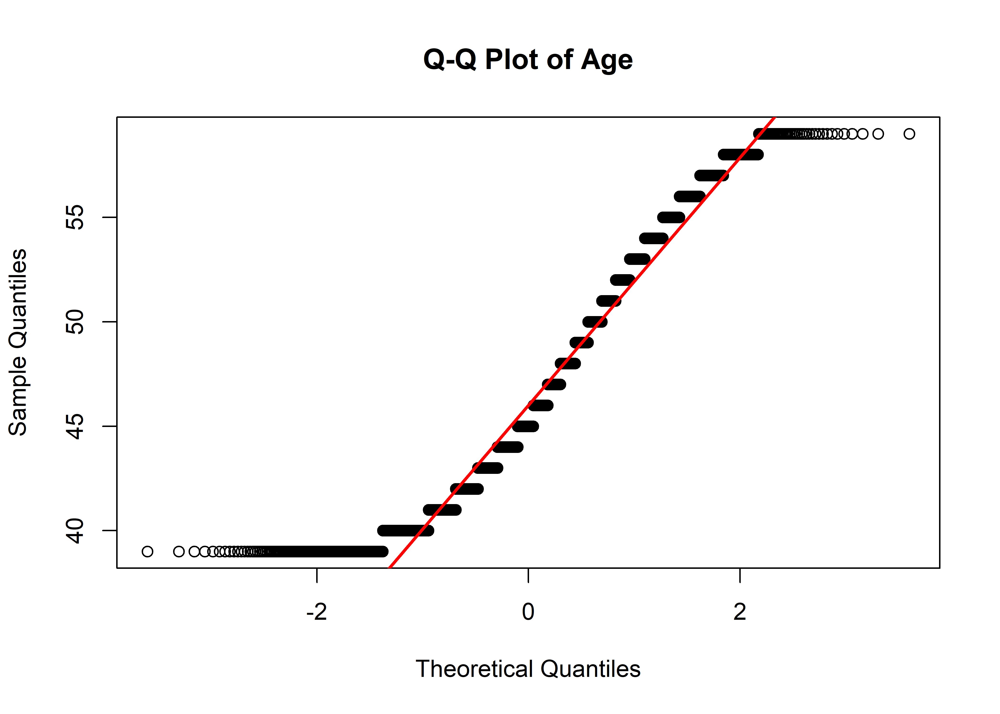
#>
#> Shapiro-Wilk normality test
#>
#> data: data_new$age
#> W = 0.93589, p-value < 2.2e-16With large sample sizes, shapiro.test() will often reject normality even for minor, practically irrelevant deviations. Always pair the formal test with a visual check (histogram or Q-Q plot) and use judgment rather than relying on the p-value alone.
Histogram
hist(x, main = NULL, xlab = NULL, ylab = NULL, col = NULL, breaks = "Sturges", …)
hist(data$Age,
main = "Distribution of Age", xlab = "Age", ylab = "Frequency",
col = "skyblue")
# Overlay a normal curve for visual comparison
sequence <- seq(min(data$Age, na.rm = TRUE), max(data$Age, na.rm = TRUE), 1)
fun <- dnorm(sequence, mean = mean(data$Age, na.rm = TRUE), sd = sd(data$Age, na.rm = TRUE))
hist(data$Age,
main = "Distribution of Age", xlab = "Age", ylab = "Frequency",
col = "skyblue", probability = TRUE)
lines(sequence, fun, col = "blue", lwd = 2)
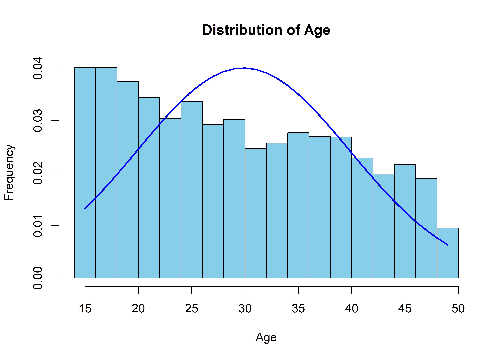
Boxplot
boxplot(x, notch = FALSE, varwidth = FALSE, col = NULL, names = NULL, …)
boxplot(data$Age, main = "Box plot for Age", col = "skyblue")
points(x = 1, y = mean(data$Age, na.rm = TRUE), col = "red", pch = 16)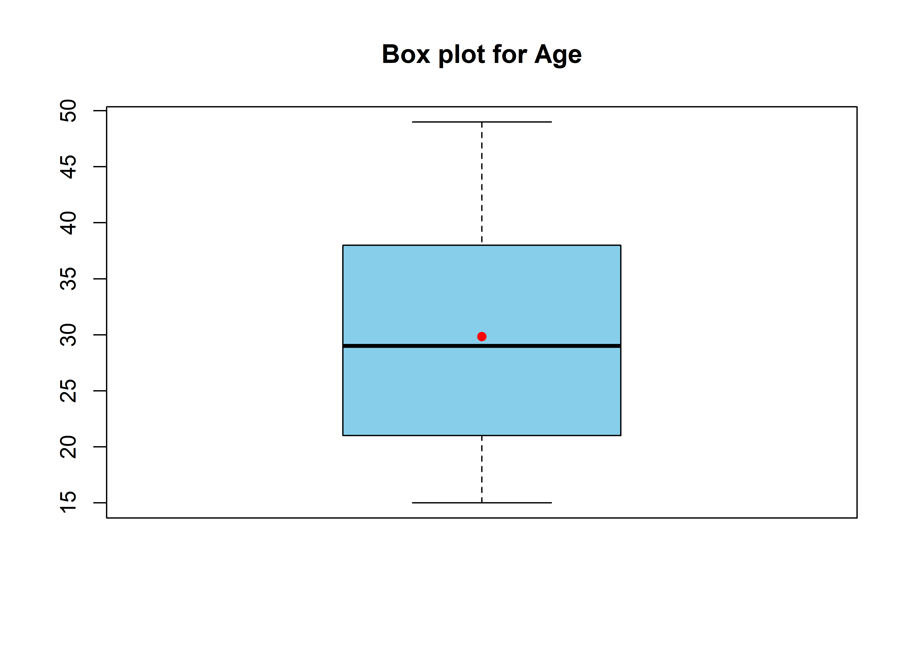
Part 3: Numeric Variables Stratified by a Categorical Variable
Base R: tapply() and aggregate()
tapply(X, INDEX, FUN) applies a function to subsets of X defined by INDEX.
tapply(data$Age, data$Sex, mean)#> Female Male
#> 29.78965 29.93019tapply(data$Age, data$Sex, sd)#> Female Male
#> 9.820693 10.202101quantile_fun <- function(x) {
q <- quantile(x, probs = c(0.25, 0.75))
names(q) <- c("q1", "q3")
q
}
tapply(data$Age, data$Sex, quantile_fun)#> $Female
#> q1 q3
#> 21 38
#>
#> $Male
#> q1 q3
#> 21 39aggregate(Age ~ Sex, data = data, FUN = mean)#> Sex Age
#> 1 Female 29.78965
#> 2 Male 29.93019aggregate(Age ~ Sex, data = data, FUN = sd)#> Sex Age
#> 1 Female 9.820693
#> 2 Male 10.202101dplyr
data |>
group_by(Sex) |>
summarise(age_mean = mean(Age, na.rm = TRUE),
age_sd = sd(Age, na.rm = TRUE),
age_min = min(Age, na.rm = TRUE),
age_q1 = quantile(Age, probs = 0.25, na.rm = TRUE),
age_q2 = quantile(Age, probs = 0.50, na.rm = TRUE),
age_q3 = quantile(Age, probs = 0.75, na.rm = TRUE))#> # A tibble: 2 × 7
#> Sex age_mean age_sd age_min age_q1 age_q2 age_q3
#> <fct> <dbl> <dbl> <dbl> <dbl> <dbl> <dbl>
#> 1 Female 29.8 9.82 15 21 29 38
#> 2 Male 29.9 10.2 15 21 29 39data |>
group_by(Sex, Ethnicity) |>
summarise(age_mean = mean(Age, na.rm = TRUE),
age_sd = sd(Age, na.rm = TRUE), .groups = "drop")#> # A tibble: 10 × 4
#> Sex Ethnicity age_mean age_sd
#> <fct> <chr> <dbl> <dbl>
#> 1 Female Brahmin_chhetri 30.1 10.0
#> 2 Female Dalit 28.7 9.69
#> 3 Female Janajati 30.4 9.69
#> 4 Female Madheshi 29.4 9.63
#> 5 Female Others 28.0 9.87
#> 6 Male Brahmin_chhetri 30.3 10.4
#> 7 Male Dalit 28.9 10.3
#> 8 Male Janajati 30.6 9.98
#> 9 Male Madheshi 29.1 10.2
#> 10 Male Others 28.3 10.0data.table
setDT(data)
data[, .(age_mean = mean(Age, na.rm = TRUE),
age_sd = sd(Age, na.rm = TRUE),
age_q1 = quantile(Age, probs = 0.25, na.rm = TRUE),
age_q3 = quantile(Age, probs = 0.75, na.rm = TRUE)),
by = Sex]#> Sex age_mean age_sd age_q1 age_q3
#> <fctr> <num> <num> <num> <num>
#> 1: Male 29.93019 10.202101 21 39
#> 2: Female 29.78965 9.820693 21 38data[, .(age_mean = mean(Age, na.rm = TRUE),
age_sd = sd(Age, na.rm = TRUE)),
by = .(Sex, Ethnicity)]#> Sex Ethnicity age_mean age_sd
#> <fctr> <char> <num> <num>
#> 1: Male Janajati 30.59778 9.982634
#> 2: Male Brahmin_chhetri 30.29485 10.373504
#> 3: Male Dalit 28.86685 10.273970
#> 4: Male Madheshi 29.05476 10.203651
#> 5: Male Others 28.32967 10.035908
#> 6: Female Janajati 30.37771 9.688996
#> 7: Female Brahmin_chhetri 30.08274 10.026432
#> 8: Female Dalit 28.69726 9.685055
#> 9: Female Madheshi 29.38453 9.632401
#> 10: Female Others 28.02518 9.874816Boxplot by Group
boxplot(data$Age ~ data$Sex,
main = "Distribution of Age by Sex",
col = c("lightpink", "lightblue"))
boxplot(data$Age ~ data$Ethnicity,
main = "Distribution of Age by Ethnicity",
col = c("grey", "skyblue", "lightpink", "lightgreen", "lightyellow"))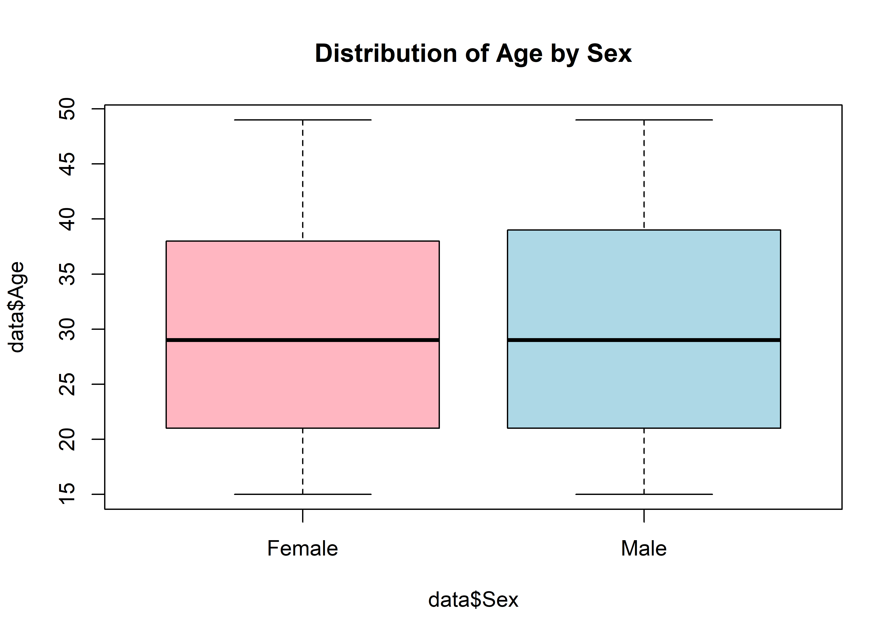
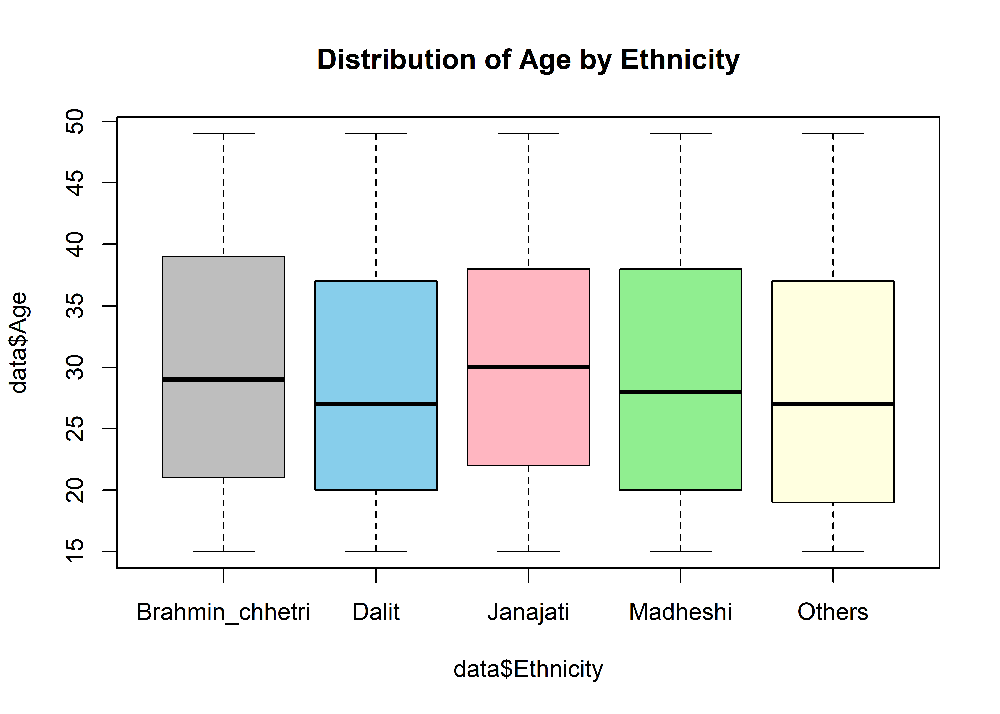
Part 4: Building a “Table 1” Summary Table
Nearly every public health manuscript opens with a baseline characteristics table stratified by exposure or outcome group — often called “Table 1.” The gtsummary package builds these in a few lines and produces output ready to export to Word.
table1 <- data |>
select(Age, Sex, Ethnicity) |>
tbl_summary(
by = Sex,
statistic = list(all_continuous() ~ "{mean} ({sd})",
all_categorical() ~ "{n} ({p}%)"),
missing = "ifany"
) |>
add_p() |>
add_overall() |>
modify_header(label ~ "**Variable**") |>
bold_labels()
table1| Variable | Overall N = 12,3531 |
Female N = 7,4401 |
Male N = 4,9131 |
p-value2 |
|---|---|---|---|---|
| Age | 30 (10) | 30 (10) | 30 (10) | 0.7 |
| Ethnicity | <0.001 | |||
| Brahmin_chhetri | 3,843 (31%) | 2,405 (32%) | 1,438 (29%) | |
| Dalit | 1,963 (16%) | 1,242 (17%) | 721 (15%) | |
| Janajati | 4,389 (36%) | 2,584 (35%) | 1,805 (37%) | |
| Madheshi | 1,698 (14%) | 931 (13%) | 767 (16%) | |
| Others | 460 (3.7%) | 278 (3.7%) | 182 (3.7%) | |
| 1 Mean (SD); n (%) | ||||
| 2 Wilcoxon rank sum test; Pearson’s Chi-squared test | ||||
Exporting Table 1
# Export to Word
table1 |>
as_gt() |>
gt::gtsave(here("Environment/Outputs", "table1.docx"))
# Export to a plain data frame / Excel
table1_df <- as_tibble(table1)
writexl::write_xlsx(table1_df, here("Environment/Outputs", "table1.xlsx"))Part 5: Graphics with ggplot2
Base R plotting (Parts 1–3) is fast for exploratory data analysis. ggplot2 is generally the choice for publication-quality figures because of its consistent grammar and fine-grained control over every visual element — this section rebuilds several of the plots above using ggplot2.
Choosing a Chart Type
The right chart depends on your variable type and what you want to communicate:
- Nominal (Sex, Ethnicity, Province): bar chart, pie chart, tree map
- Ordinal (education level, Likert scale): ordered bar chart, dot plot
- Interval/Ratio (Age, Height, Income): histogram, box plot, line chart
- Time series: line chart, area chart
- Hierarchical: treemap, sunburst chart
- Correlation/Relationships: scatter plot, bubble chart, heatmap
- Distribution: histogram, box plot, kernel density plot
- Geospatial: choropleth map, cartogram
- Comparison across groups: grouped or stacked bar chart
The Grammar of Graphics
Every ggplot2 plot has three required components:
- A dataset in tidy format.
- Aesthetic mappings between variables and visual properties (x, y, color, fill, shape, size).
- At least one layer (
geom_*()) describing how observations are rendered — e.g.geom_bar(),geom_boxplot(),geom_histogram(),geom_point(),geom_line().
Basics
ggplot(data = data, aes(x = Sex, y = Age)) +
geom_boxplot()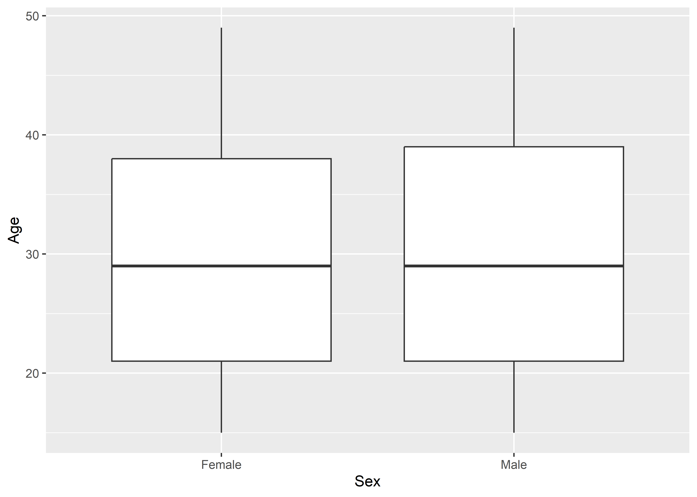
ggplot(data = data, aes(x = Sex, y = Age, fill = Ethnicity)) +
geom_boxplot()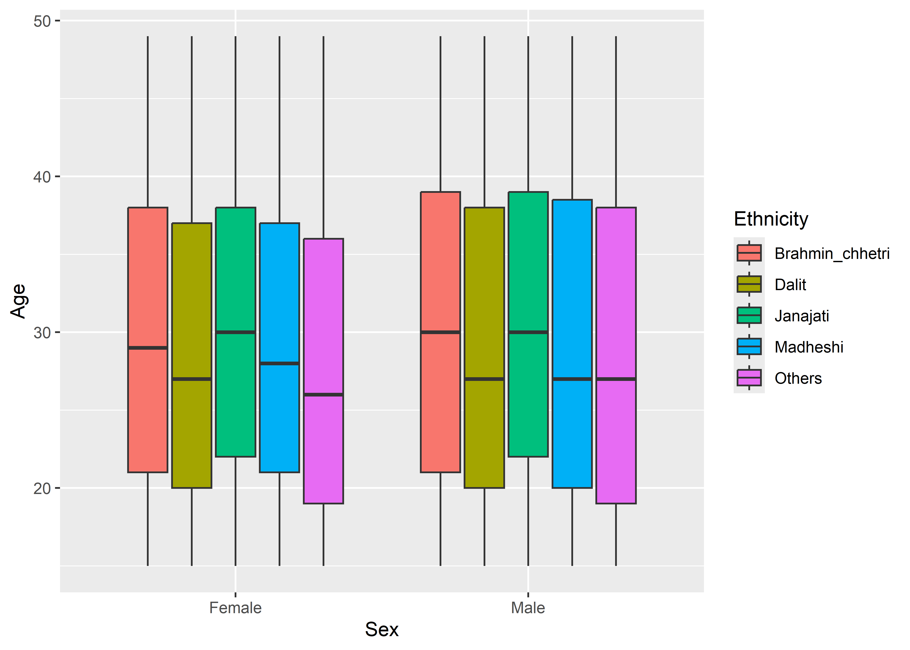
ggplot(data = data, aes(x = Sex, y = Age, fill = Ethnicity)) +
geom_boxplot() +
xlab("Gender") +
ylab("Age (in years)") +
labs(title = "Sex- and ethnicity-wise distribution of Age",
subtitle = "Caption here", tag = "A")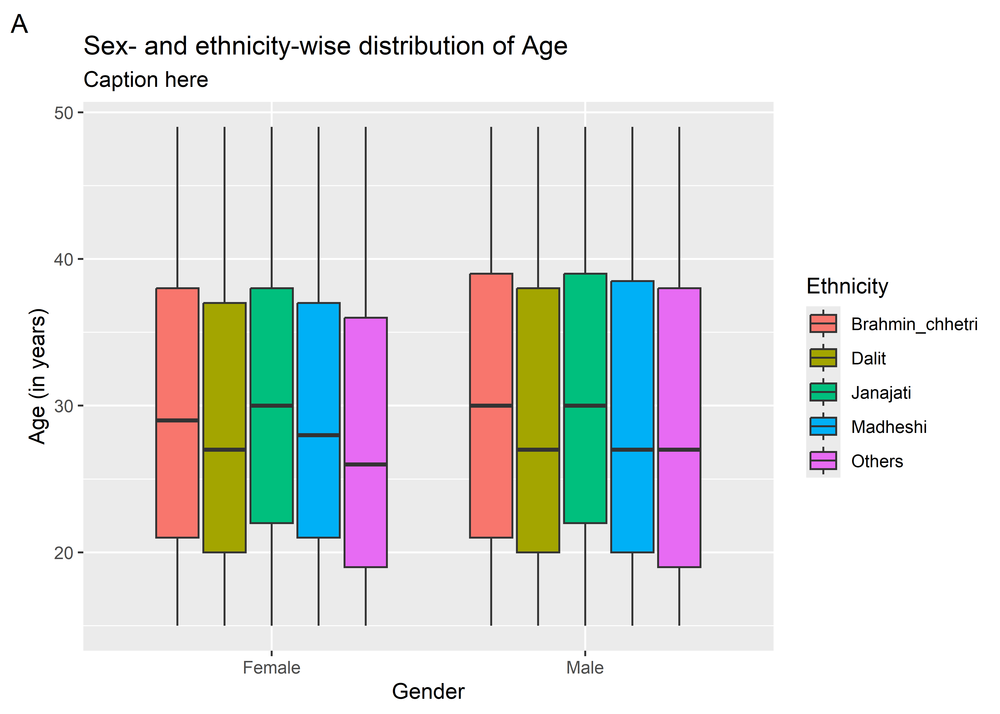
Manual Colors
ggplot(data = data, aes(x = Sex, y = Age, fill = Ethnicity)) +
geom_boxplot() +
scale_fill_manual(values = c("lightpink", "lightblue", "lightyellow",
"lightgreen", "navy")) +
xlab("Gender") + ylab("Age (in years)") +
labs(title = "Sex- and ethnicity-wise distribution of Age")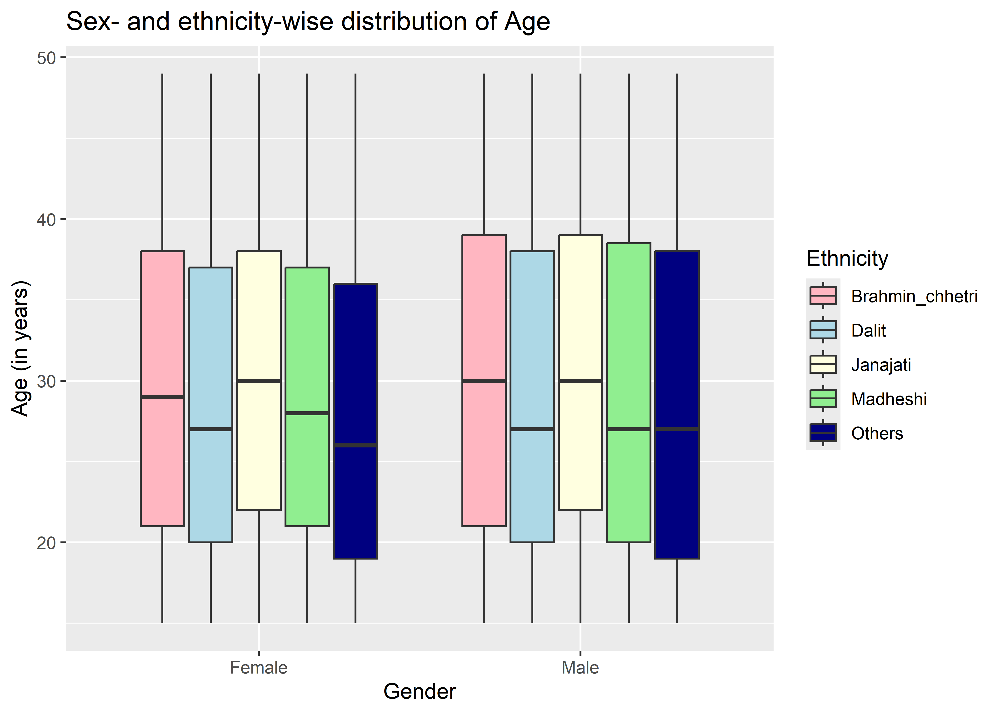
Faceting
Faceting splits data into subsets and repeats the same plot for each — facet_wrap() (flexible grid) vs facet_grid() (strict grid).
ggplot(data = data, aes(x = Sex, y = Age, fill = Ethnicity)) +
geom_boxplot() +
facet_wrap(facets = ~Ethnicity, nrow = 3, scales = "free")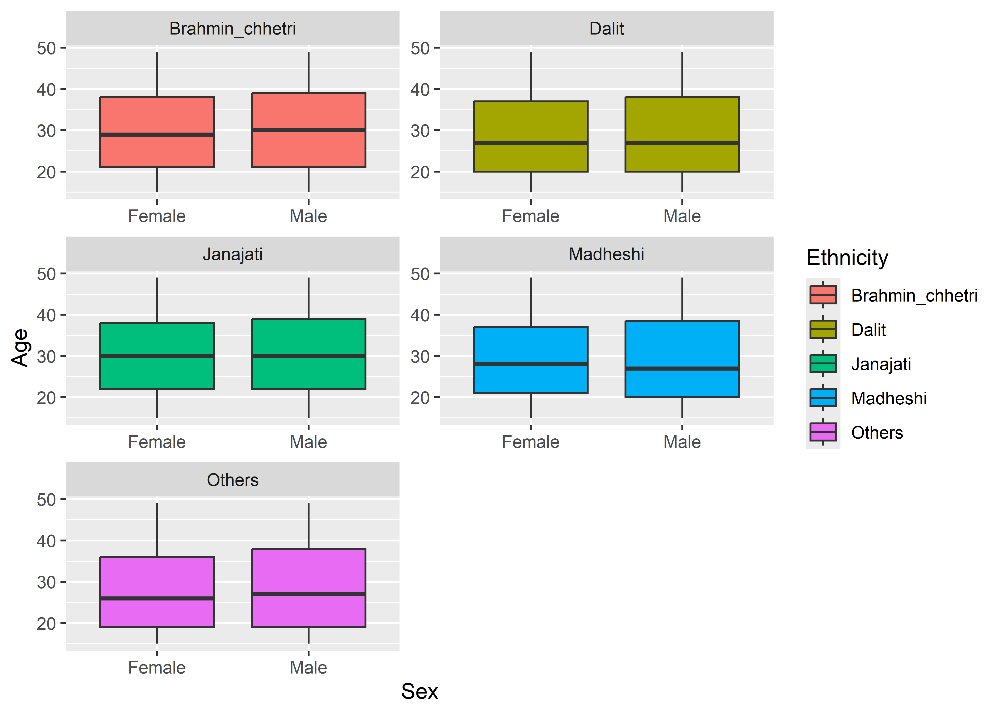
Themes
ggplot2 themes are built from four components: theme elements (e.g. panel.background, axis.title, legend.title), element functions (element_text(), element_line(), element_rect(), element_blank()), the theme() function to override defaults, and complete themes (theme_minimal(), theme_light(), theme_dark(), theme_classic()).
ggplot(data = data, aes(x = Sex, y = Age, fill = Ethnicity)) +
geom_boxplot() +
xlab("Gender") + ylab("Age (in years)") +
labs(title = "Sex- and ethnicity-wise distribution of Age") +
facet_wrap(facets = ~Ethnicity, nrow = 3, scales = "free_x") +
theme(panel.background = element_rect(fill = "lightgreen"),
panel.grid = element_blank(),
plot.title = element_text(face = "bold", color = "red", size = 13),
axis.title = element_text(face = "bold", color = "blue"),
legend.position = "bottom")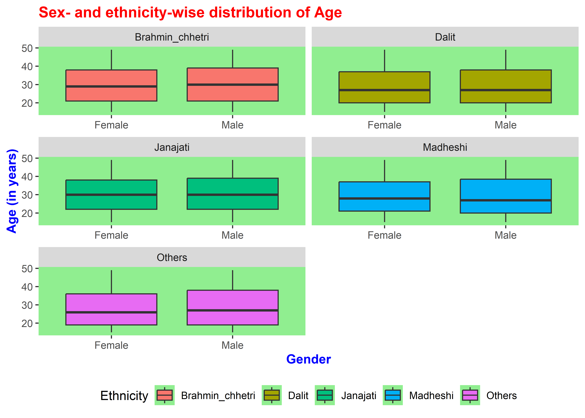
Part 6: Mapping with sf and ggplot2
llmap <- sf::st_read(here("Environment/Datasets", "Shape file of Nepal", "Nepal_llmapcoded.shp"))#> Reading layer `Nepal_llmapcoded' from data source
#> `D:\Epi Biostat with R\Biostat_with_R\Environment\Datasets\Shape file of Nepal\Nepal_llmapcoded.shp'
#> using driver `ESRI Shapefile'
#> Simple feature collection with 777 features and 8 fields
#> Geometry type: MULTIPOLYGON
#> Dimension: XY
#> Bounding box: xmin: 80.06015 ymin: 26.34742 xmax: 88.2043 ymax: 30.46745
#> Geodetic CRS: WGS 84ggplot(data = llmap) +
geom_sf(aes(geometry = geometry), col = "black") +
coord_sf(crs = "WGS84") +
theme(panel.background = element_blank(),
axis.title = element_blank(),
axis.text = element_blank(),
axis.ticks = element_blank())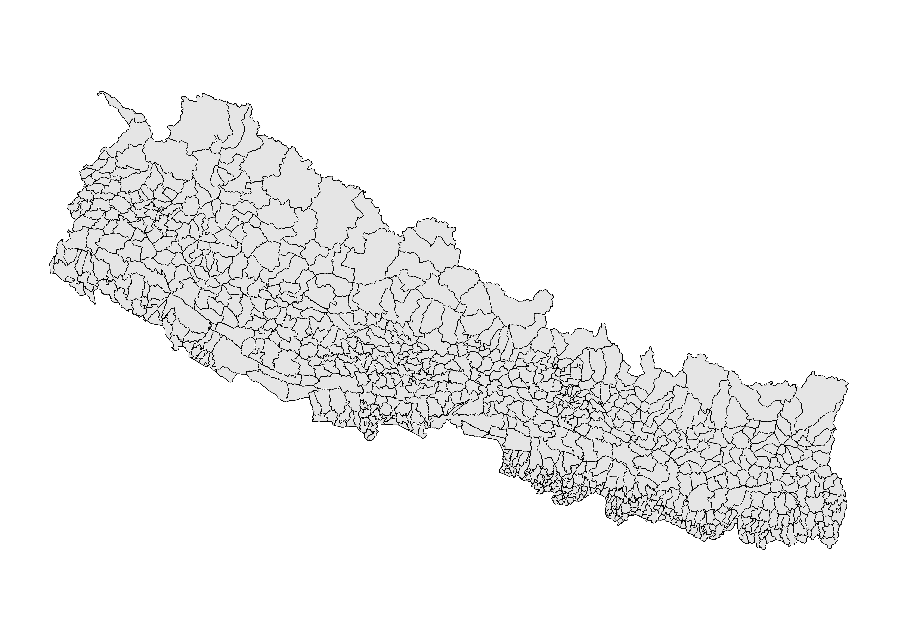
ggplot(data = llmap) +
geom_sf(aes(geometry = geometry, fill = TYPE), col = "black") +
scale_fill_viridis_d() +
coord_sf(crs = "WGS84") +
theme(panel.background = element_blank(),
legend.title = element_text(face = "bold"),
axis.title = element_blank(),
axis.text = element_blank(),
axis.ticks = element_blank())
Part 7: Applied Case Studies
The examples in this section use different datasets from the rest of the chapter (introduced individually below) to show how the tools above come together in real analysis workflows.
Case Study 1: 4+ ANC Visits by Province, with Confidence Intervals
Dataset: For graphics1.RDS — survey data with variables Province, Location, and Four_ANC (whether a woman had 4+ antenatal care visits).
dt <- readRDS(here("Environment/Datasets", "For graphics1.RDS"))
a <- dt |>
group_by(Location, Province, Four_ANC) |>
tally() |>
ungroup() |>
group_by(Location, Province) |>
mutate(total = sum(n),
percent = n / total * 100,
ci = DescTools::BinomCI(n, total, method = "clopper-pearson") * 100) |>
filter(Four_ANC == "Yes")
ggplot(data = a) +
geom_bar(aes(x = Location, y = percent, fill = Location),
col = "black", stat = "identity", alpha = 1) +
geom_errorbar(aes(x = Location, y = percent,
ymin = a$ci[, 2], ymax = a$ci[, 3]),
width = 0.3, linewidth = 1) +
facet_wrap(~Province, nrow = 1) +
geom_text(aes(x = Location, y = percent, label = sprintf("%0.2f", percent)),
size = 4, vjust = 1.5, hjust = -0.1, angle = 90, col = "blue") +
scale_fill_manual(values = c("pink", "lightgreen")) +
xlab("Location") + ylab("Percent (%) with CI") +
labs(title = "Distribution of 4+ ANC by Location and Province") +
theme(panel.background = element_blank(),
panel.grid = element_blank(),
legend.position = "bottom")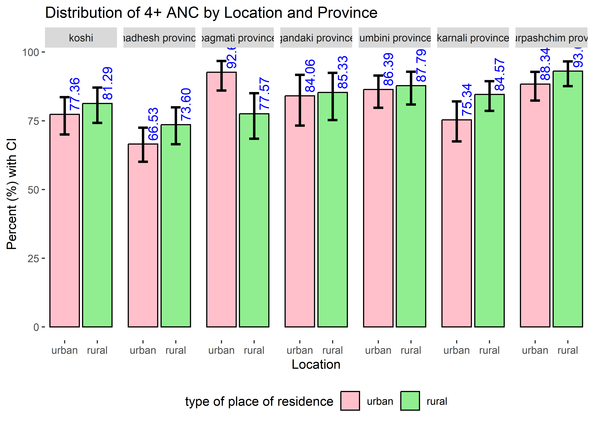
Notice how the percent was calculated within Location and Province groups before faceting — a common pivot-table mistake is computing percentages over the wrong grouping level and only noticing once the bars don’t sum to 100% within each panel.
Case Study 2: Global Burden of Disease — Diabetes Mellitus
Dataset: For graphics2.xlsx (sheet "dataset") — GBD-style data with Age, Sex, Class (DM type), and prop (prevalence/death/DALY proportions).
gbd <- read_excel(here("Environment/Datasets", "For graphics2.xlsx"), sheet = "dataset")
gbd$Age2 <- factor(gbd$Age,
levels = c("<1","1-4","5-9","10-14","15-19","20-24","25-29","30-34",
"35-39","40-44","45-49","50-54","55-59","60-64","65-69","70+"),
ordered = TRUE)
gbd$Class <- factor(gbd$Class, levels = c("DM", "DM1", "DM2"),
labels = c("Diabetes Mellitus (combined)",
"Diabetes Mellitus (Type 1)",
"Diabetes Mellitus (Type 2)"))
prevalence <- gbd[gbd$Ovearll_class %in% c("DM_P", "DM1_P", "DM2_P"), ]
death <- gbd[gbd$Ovearll_class %in% c("DM_D", "DM1_D", "DM2_D"), ]
daly <- gbd[gbd$Ovearll_class %in% c("DM_Da", "DM1_Da", "DM2_Da"), ]
c1 <- ggplot(prevalence) +
geom_bar(aes(x = Age2, y = prop, fill = Sex), stat = "identity", position = "dodge") +
xlab("Age (years)") + ylab("Prevalence") +
facet_wrap(~Class, nrow = 3, scales = "free_x") +
theme(legend.position = "none", strip.text = element_blank()) +
coord_flip()
c2 <- ggplot(death) +
geom_bar(aes(x = Age2, y = prop, fill = Sex), stat = "identity", position = "dodge") +
xlab("") + ylab("Deaths") +
facet_wrap(~Class, nrow = 3, scales = "free_x") +
theme(legend.position = "none", strip.text = element_blank()) +
coord_flip()
c3 <- ggplot(daly) +
geom_bar(aes(x = Age2, y = prop, fill = Sex), stat = "identity", position = "dodge") +
xlab("") + ylab("DALYs") +
facet_wrap(~Class, nrow = 3, scales = "free_x", strip.position = "right") +
theme(legend.position = "none") +
coord_flip()
combined <- (c1 + c2 + c3) & theme(legend.position = "top", legend.title = element_blank())
m <- combined + plot_layout(guides = "collect")
m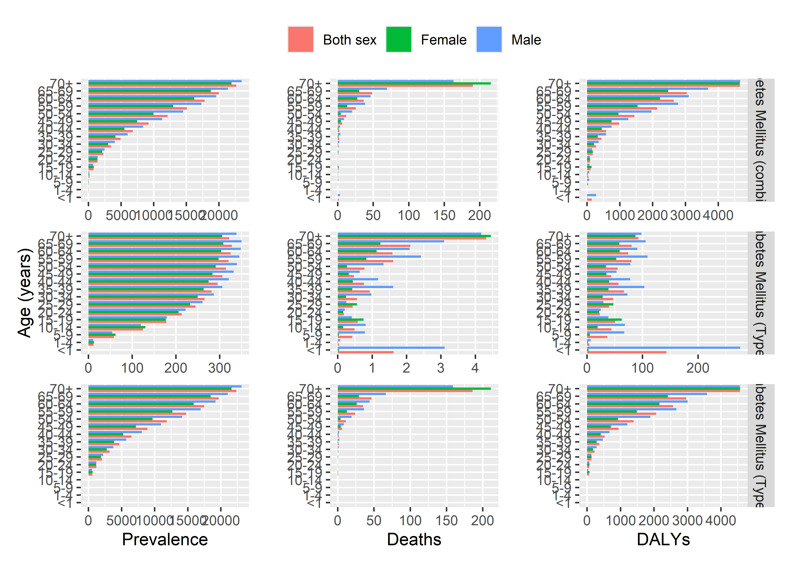
ggsave(here("Environment/Outputs", "chart1.pdf"), plot = m, dpi = 300)Case Study 3: GBD Trends Over Time — Chronic Kidney Disease
Dataset: For graphics3.xlsx — raw GBD export with measure_name, age_name, sex_name, cause_name, year, val.
gbd3 <- read_excel(here("Environment/Datasets", "For graphics3.xlsx"))
gbd3$Year <- factor(gbd3$year, ordered = TRUE)
gbd3$cause_name <- as.factor(gbd3$cause_name)
gbd3$sex_name <- as.factor(gbd3$sex_name)
daly3 <- gbd3[gbd3$measure_name == "DALYs (Disability-Adjusted Life Years)", ]
deaths3 <- gbd3[gbd3$measure_name == "Deaths", ]
prev3 <- gbd3[gbd3$measure_name == "Prevalence", ]
pe <- prev3 |>
filter(sex_name == "Both", metric_name == "Rate",
!age_name %in% c("Age-standardized", "All ages", "70+"),
cause_name != "Chronic kidney disease",
year %in% c(1990, 2019))
a <- ggplot(pe) +
geom_bar(aes(x = age_name, y = val, fill = cause_name),
stat = "identity", position = "stack", color = "black", linewidth = 0.01) +
ylab("Prevalence rate (per 100,000)") + xlab("") +
scale_fill_manual(values = c("#9CD5E8", "#E69F00", "#00559C", "#CD534C", "#6BB43E")) +
facet_wrap(~Year) +
theme(legend.position = "bottom", legend.title = element_blank(),
axis.text.x = element_text(angle = 45, hjust = 1))
a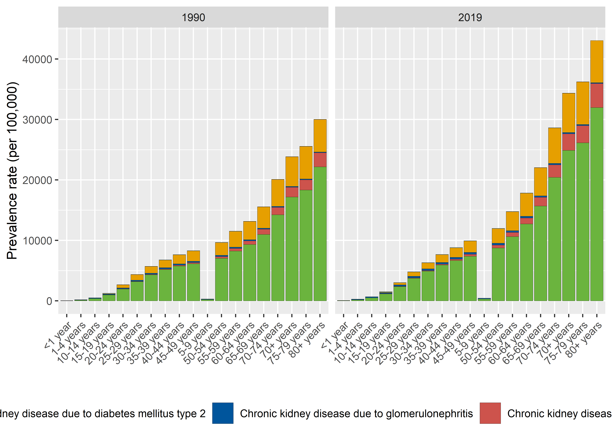
ggsave(here("Environment/Outputs", "chart2.png"), plot = a, dpi = 300)Exercises
- Using
dt.dta, produce a frequency table and bar chart for a categorical variable other thanSex. - Compute skewness and kurtosis for
Age. Is the distribution symmetric? Support your answer with a histogram. - Run
shapiro.test()onAgestratified bySex(hint:tapply()). Do both groups appear normally distributed? - Build a
gtsummaryTable 1 stratified byEthnicityinstead ofSex, and export it to Word. - Recreate the Case Study 1 bar chart using a different confidence interval method available in
DescTools::BinomCI()(e.g."wilson") and compare the resulting intervals.